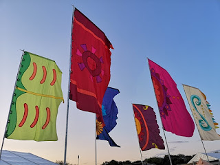
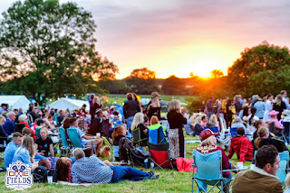
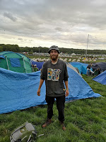
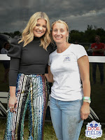
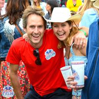
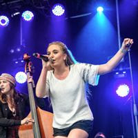
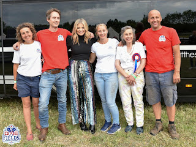

 |
| Festive flags at Boomtowm |
{kind=link}
I’ll never feel quite the same about festivals. Over the
last few years I’ve written several posts in response to my happy experiences at the Felixstowe Book Festival. But I've usually been looking from a performer's point of view -- never exactly undervaluing the efforts of organiser Meg Reid and her volunteers, but not setting them centre stage. Earlier this year, observing my daughter Georgie Thorogood turning her vision of Dixie Fields (her debut country music festival) into reality, I began to get a glimpse of the
extraordinary level of challenge faced by all festival organisers. (And here's to you too, Ros Green, at the Essex Book Festival.)
 In May I wrote a
blogpost apologising to my fictional character, Lottie Livesey, for giving her a festival organiser's role to ensure she was sufficiently off-stage in Pebble to allow my child characters an unimpeded adventure. Poor Lottie, when I'd side-lined her previously (in A Ravelled Flag) I'd sent her to live in a partially-converted shipping container with enslaved workers and a ruthless gang-master. This time I thought I was being authorially kind
‘merely’ giving her a folk music festival to organise. Initially she was willing (it was probably her idea) but once she began to grasp the reality of the role she may have wished she was back
with the illegals, cleaning school toilets late into the night.
In May I wrote a
blogpost apologising to my fictional character, Lottie Livesey, for giving her a festival organiser's role to ensure she was sufficiently off-stage in Pebble to allow my child characters an unimpeded adventure. Poor Lottie, when I'd side-lined her previously (in A Ravelled Flag) I'd sent her to live in a partially-converted shipping container with enslaved workers and a ruthless gang-master. This time I thought I was being authorially kind
‘merely’ giving her a folk music festival to organise. Initially she was willing (it was probably her idea) but once she began to grasp the reality of the role she may have wished she was back
with the illegals, cleaning school toilets late into the night.
Lottie's festival faced a threat of cancellation (public safety risk) but finally went ahead. She would then have discovered how much her toilet-management mattered. I ran the information tent for Dixie Fields
Festival and passed on a steady stream of toilet-related issues to Georgie and Frank. That's not quite accurate -- a 'steady
stream' would have been okay – it was the blockages and overflowings
that became ‘issues’ (or didn't). There was a full-time toilet-cleaner on the
site – NOT an exploited illegal but a most glamourous and charming individual
who never looked flustered but was sometimes overwhelmed (all these words begin
to threaten to be taken literally) by the feedback (backfeed?) from
the loos. There was the lady who dropped her phone into one of them, very late at
night. There were the people who were caught out by the fact we’d re-positioned
the accessible toilets so they would be more accessible. We’d put out lots of
signs but those vital facilities weren’t where they’d been shown on the map.
Learning point: you can shift your stage, your bars, your entire festival site but your toilets must be polar north, the fixed point of the turning world. That phrase (which I’d got slightly wrong) made me think of TS Eliot .. who stopped me thinking about toilets and got me back to thinking about festivals.
Learning point: you can shift your stage, your bars, your entire festival site but your toilets must be polar north, the fixed point of the turning world. That phrase (which I’d got slightly wrong) made me think of TS Eliot .. who stopped me thinking about toilets and got me back to thinking about festivals.
 |
| Dixie Fields sunset |
{kind=link}
At the still point of the
turning world. Neither flesh nor fleshless;
Neither from nor towards; at the still point,
there the dance is,
But neither arrest nor movement. And do not call it fixity,
Where past and future are gathered. Neither movement from nor towards,
Neither ascent nor decline. Except for the point, the still point,
There would be no dance, and there is only the dance
I can only say, there we have been: but I cannot say where
And I cannot say, how long, for that is to place it in time.
But neither arrest nor movement. And do not call it fixity,
Where past and future are gathered. Neither movement from nor towards,
Neither ascent nor decline. Except for the point, the still point,
There would be no dance, and there is only the dance
I can only say, there we have been: but I cannot say where
And I cannot say, how long, for that is to place it in time.
(Burnt Norton)
Yesterday my son Bertie and niece Ruth went off laden with
rucksacks, tent, sleeping bags, wellies, waterproof trousers, a few bottles of
cider and tins of beans and tie-dyed t-shirts and eccentric hats. They were heading for Boomtown Fair an extraordinary ‘immersive
experience’, fusion of music and story and a whole new world built for the
occasion. They will have five days in an alternative reality (except when the
toilets fail) The Boomtown concept is clearly exceptional, even among festivals, but I think there is something a little bit magic about any successful festival experience: I can only say, there we have been: but I cannot say where / And I cannot say, how long, for that is to place it in time.
 |
| Boomtown Bertie |
{kind=link}
I’m guessing that’s why the festival attendees who have been
turned away from this weekend’s Boardmasters Festival in Cornwall are feeling
so upset. They’re talking about the money they’ve spent, the packing done and the distances travelled – but it’s the total experience they’re going to miss, the 'time
out of time'. From the other side of the ticket barrier the organisers of the Houghton festival in Norfolk speak of the 'hard work, love and creativity' that they have put into planning their event, also cancelled due to the forecast gale-force winds.
One of my best moments from Dixie Fields (there were many) was seeing people
arrive on Friday, laden and tired and looking anxiously around as
they selected their camping spot and began to struggle with the instructions
for the tent. My job then was to walk with one of my grandchildren
welcoming them and explaining about the system for recyclable cups and what would be happening later that evening (a film, two performances, a chance for them to take the stage and sing). It was a delight to see the tents up and people settling into their temporary homes, having a drink and forgetting the everyday world for the next 44 hours or so. Boomtown and Boardmasters will (or would) last five days: Dixie Fields was only a 'boutique' event.
 |
| Festival star Lauren Alaina with festival star Georgie |
{kind=link}
Only 44 hours – but the paperwork it had generated. I
knew how many documents Georgie, as organiser, had needed to collect because it had been my job to carry the hefty file of risk assessments, insurance disclaimers and incident scenarios into Chelmsford City Council some months before, though
it was Georgie and her brother Frank who’d had to appear and be
cross-questioned at the Licencing Committee meeting. Every trader and probably
every artist had to supply their public liability insurance certificates,
individual risk assessment forms, be given site induction packages, identity
badges, signed permissions. Dixie Fields Festival employed a health and safety officer,
ticketing staff, parking marshals, security guards, paramedics on site all
weekend. Had to, obviously.
In Pebble I
recklessly sent a freak waterspout up against the lighthouse where Lottie was
planning to launch her event: I’m certain
now that such an eventuality would have been covered somewhere in the pre-planning paperwork -- and the festival would have been instantly brought to a close. Those unfortunate festival organisers in Cornwall (and Norfolk) who are
bearing the collective disappointment of their audience, won’t have stood a
chance of being allowed to carry on once the Met Office issued those yellow
warnings. And it’ll be too late to re-arrange if Saturday turns out fine after all.
 |
| Publicity director Jamie & his wife Simone, finally having fun |
{kind=link}
What I've learned since Dixie Fields has actually happened, is that organising a festival is a hugely creative enterprise, it’s not only about toilets and security. The organiser is shaping a space for people to shift their reality, to set aside their ordinary selves, to
come together in art: Each act on the programme is like a
new chapter in the overall festival narrative – slow moments, listening moments,
participative jump-about- and-wave-your-arms-in-the-air moments, moments to
laugh, to cry, to sing along. The organiser has to trust their performers to make this
happen in the moment, but they've chosen their artists, welcomed them,negotiated the order of their
appearance – it’s a little like a writer trusting the characters she's set in motion in a
work of fiction.
| Grand daughter Hettie & friend star-struck |
{kind=link}
I watched Georgie (and Frank and his friend Jamie, who were co-directors) coping with their own emotional tension,
with the hundreds of questions and adjustments, catching occasional fragments
of the music blowing across. They continually needed to bear the whole event in their minds, as well as all of the
constituent parts.
It was a shock when I heard that the humongous great tour bus carrying Lauren Alaina, the US headliner and her team, had arrived at 0730 for a performance scheduled for 2140 but excellence mattered to them to: they needed to be sure that that the sound quality was right and everything exactly as per contact. Later that morning the tour manager said to me ‘Your daughter, she’s very good – are you sure this is a first-time festival?’ That was a great moment for me. And there were other personal moments that I watched my grandchildren reacting to the music and the 'stars' with total delight and spontaneity – and then there was the Sunday morning when a couple from the campsite came over to my decimated information tent.
It was a shock when I heard that the humongous great tour bus carrying Lauren Alaina, the US headliner and her team, had arrived at 0730 for a performance scheduled for 2140 but excellence mattered to them to: they needed to be sure that that the sound quality was right and everything exactly as per contact. Later that morning the tour manager said to me ‘Your daughter, she’s very good – are you sure this is a first-time festival?’ That was a great moment for me. And there were other personal moments that I watched my grandchildren reacting to the music and the 'stars' with total delight and spontaneity – and then there was the Sunday morning when a couple from the campsite came over to my decimated information tent.
‘We just want to tell you; about those showers, the ones on the campsite, next to the toilet block …’
‘Ye…es?’
‘They’re absolutely the best showers we've seen at any festival.’
So, that was Dixie Fields 2019 and there will be a Dixie Fields 2020 (weather gods permitting). However I probably need to state in some very early chapter that any lingering Russian oligarchs wanting to launder £££ from their dodgy deals should bring their grubby swag to my information tent forthwith. Then we'll just pop across to that shower block and ensure de luxe accessible facilities throughout.*
 |
| 'That Festival Feeling' Sarabeth from Royal South |
{kind=link}
 |
| Alice, Jamie, Lauren, Georgie, Julia, Frank |
{kind=link}